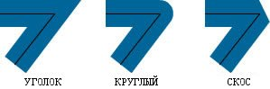

| Пакет | flash.display |
| Класс | public final class GraphicsStroke |
| Наследование | GraphicsStroke |
| Реализует | IGraphicsStroke, IGraphicsData |
| Язык версии: | ActionScript 3.0 |
| Версии среды выполнения: | Flash Player 10, AIR 1.5 |
Используйте объект GraphicsStroke совместно с методом Graphics.drawGraphicsData(). Рисование объекта GraphicsStroke эквивалентно вызову одного из методов класса Graphics, задающего стиль линии, таких как Graphics.lineStyle(), Graphics.lineBitmapStyle() или Graphics.lineGradientStyle().
Связанные элементы API
flash.display.Graphics.lineBitmapStyle()
flash.display.Graphics.lineGradientStyle()
flash.display.Graphics.drawGraphicsData()
 Скрыть унаследованные общедоступные свойства
Скрыть унаследованные общедоступные свойства Показать унаследованные общедоступные свойства
Показать унаследованные общедоступные свойства| Свойство | Определено | ||
|---|---|---|---|
| caps : String
Указывает тип концов линии. | GraphicsStroke | ||
 | constructor : Object
Ссылка на объект класса или функцию конструктора для данного экземпляра объекта. | Object | |
| fill : IGraphicsFill
Указывает экземпляр, содержащий данные для заливки штриха. | GraphicsStroke | ||
| joints : String
Задает тип стыка на углах. | GraphicsStroke | ||
| miterLimit : Number
Указывает предел усечения уголка. | GraphicsStroke | ||
| pixelHinting : Boolean
Указывает, следует ли выполнять хинтинг до полных пикселей. | GraphicsStroke | ||
| scaleMode : String
Задает масштаб толщины штриха. | GraphicsStroke | ||
| thickness : Number
Указывает толщину линии в точках; допустимыми являются значения от 0 до 255. | GraphicsStroke | ||
| Метод | Определено | ||
|---|---|---|---|
GraphicsStroke(thickness:Number = NaN, pixelHinting:Boolean = false, scaleMode:String = "normal", caps:String = "none", joints:String = "round", miterLimit:Number = 3.0, fill:IGraphicsFill = null)
Создает новый объект GraphicsStroke. | GraphicsStroke | ||
|
Показывает, определено ли заданное свойство для объекта. | Object | |
|
Показывает, есть ли экземпляр класса Object в цепи прототипов объекта, заданного в качестве параметра. | Object | |
|
Показывает наличие заданного свойства и его перечисляемость. | Object | |
|
Задает доступность динамического свойства для операций цикла. | Object | |
|
Возвращает строковое представление этого объекта, отформатированного в соответствии со стандартами, принятыми для данной локали. | Object | |
|
Возвращает строковое представление заданного объекта. | Object | |
|
Возвращает элементарное значение заданного объекта. | Object | |
caps | свойство |
caps:String| Язык версии: | ActionScript 3.0 |
| Версии среды выполнения: | Flash Player 10, AIR 1.5 |
Указывает тип концов линии. Допустимые значения: CapsStyle.NONE, CapsStyle.ROUND и CapsStyle.SQUARE. Если значение не указано, Flash Player использует круглые концы.
Следующий пример иллюстрирует разные параметры класса capsStyle. На рисунке представлено три синих линии толщиной 30 (к которым применяется capsStyle), а поверх них нанесена черная линия толщиной 1 (к которой capsStyle не применяется):

Реализация
public function get caps():String public function set caps(value:String):voidСвязанные элементы API
fill | свойство |
public var fill:IGraphicsFill| Язык версии: | ActionScript 3.0 |
| Версии среды выполнения: | Flash Player 10, AIR 1.5 |
Указывает экземпляр, содержащий данные для заливки штриха. Экземпляр IGraphicsFill может представлять собой последовательность команд для заливки.
Связанные элементы API
joints | свойство |
joints:String| Язык версии: | ActionScript 3.0 |
| Версии среды выполнения: | Flash Player 10, AIR 1.5 |
Задает тип стыка на углах. Допустимые значения: JointStyle.BEVEL, JointStyle.MITER и JointStyle.ROUND. Если значение не указано, Flash Player использует круглые стыки.
Следующий пример иллюстрирует разные параметры joints. На рисунке представлено три синих линии толщиной 30 (к которым применяется jointStyle), а поверх них нанесена черная линия толщиной 1 (к которой jointStyle не применяется):

Примечание. Для joints типа JointStyle.MITER можно использовать параметр miterLimit, чтобы ограничить длину уголка.
Реализация
public function get joints():String public function set joints(value:String):voidСвязанные элементы API
miterLimit | свойство |
public var miterLimit:Number| Язык версии: | ActionScript 3.0 |
| Версии среды выполнения: | Flash Player 10, AIR 1.5 |
Указывает предел усечения уголка. Допустимыми являются значения в диапазоне 1-255 (остальные значения округляются до 1 или 255). Это значение используется, только если для jointStyle выбран тип "miter". Значение miterLimit – это длина, до которой может продлеваться уголок после точки стыка. Значение выражает фактор толщины линии. Например, при факторе miterLimit, равном 2,5, и толщине в 10 пикселей длина уголка достигает 25 пикселей.
Рассмотрим следующие углы, все составленные из линий с thickness 20, но с разными значениями miterLimit: 1, 2 и 4. Поверх углов для наглядности нанесены черные линии, показывающие точки стыка:

Обратите внимание, что данное значение miterLimit имеет специфический максимальный угол для усечения «уголка». В следующей таблице приводится несколько примеров.
Значение miterLimit: | Углы, меньше этого, усекаются: |
|---|---|
| 1.414 | 90 градусов |
| 2 | 60 градусов |
| 4 | 30 градусов |
| 8 | 15 градусов |
pixelHinting | свойство |
public var pixelHinting:Boolean| Язык версии: | ActionScript 3.0 |
| Версии среды выполнения: | Flash Player 10, AIR 1.5 |
Указывает, следует ли выполнять хинтинг до полных пикселей. Оно влияет на позицию привязок кривой и на размер штриха линии как таковой. Если для pixelHinting задано значение true, проигрыватель Flash Player доводит ширину линии до полного пикселя. Если для pixelHinting задано значение false, в кривых и прямых линиях могут возникать разрывы. Например, на следующих рисунках показано, как проигрыватель Flash Player визуализирует два одинаковых округленных прямоугольника, которые отличаются только настройкой параметра pixelHinting в методе lineStyle() (с целью наглядности изображения увеличены на 200%):

scaleMode | свойство |
scaleMode:String| Язык версии: | ActionScript 3.0 |
| Версии среды выполнения: | Flash Player 10, AIR 1.5 |
Задает масштаб толщины штриха. Допустимые значения:
-
LineScaleMode.NORMAL— Всегда масштабировать толщину линии при масштабировании объекта (по умолчанию). -
LineScaleMode.NONE— Никогда не масштабировать толщину линии. -
LineScaleMode.VERTICAL— Не масштабировать толщину линии, если объект масштабируется только по вертикали. Например, рассмотрим следующие окружности, нарисованные линией толщиной в 1 пиксель, для каждой из которых параметруscaleModeзадано значениеLineScaleMode.VERTICAL. Масштаб окружности слева изменен только по вертикали, а окружности справа — и по вертикали и по горизонтали.
-
LineScaleMode.HORIZONTAL— Не масштабировать толщину линии, если объект масштабируется только по горизонтали. Например, рассмотрим следующие окружности, нарисованные линией толщиной 1 пиксель, для каждой из которых параметруscaleModeзадано значениеLineScaleMode.HORIZONTAL. Масштаб окружности слева изменен только по горизонтали, а окружности справа — и по вертикали и по горизонтали.
Реализация
public function get scaleMode():String public function set scaleMode(value:String):voidСвязанные элементы API
thickness | свойство |
public var thickness:Number| Язык версии: | ActionScript 3.0 |
| Версии среды выполнения: | Flash Player 10, AIR 1.5 |
Указывает толщину линии в точках; допустимыми являются значения от 0 до 255. Если число не указано или параметр не определен, то линия не будет проведена. Если передается значение меньше 0, по умолчанию задается 0. Значение 0 обозначает толщину одного волоса, максимальная толщина составляет 255. Если передается значение больше 255, по умолчанию задается 255.
GraphicsStroke | () | Конструктор |
public function GraphicsStroke(thickness:Number = NaN, pixelHinting:Boolean = false, scaleMode:String = "normal", caps:String = "none", joints:String = "round", miterLimit:Number = 3.0, fill:IGraphicsFill = null)| Язык версии: | ActionScript 3.0 |
| Версии среды выполнения: | Flash Player 10, AIR 1.5 |
Создает новый объект GraphicsStroke.
Параметрыthickness:Number (default = NaN) | |||||||||||
pixelHinting:Boolean (default = false)pixelHinting задано значение true, проигрыватель Flash Player доводит ширину линии до полного пикселя. Если для pixelHinting задано значение false, в кривых и прямых линиях могут возникать разрывы. Например, на следующих рисунках показано, как проигрыватель Flash Player визуализирует два одинаковых округленных прямоугольника, которые отличаются только настройкой параметра pixelHinting в методе lineStyle() (с целью наглядности изображения увеличены на 200%):
Если значение не задано, для линии не используется хинтинг пикселей. | |||||||||||
scaleMode:String (default = "normal")
| |||||||||||
caps:String (default = "none")CapsStyle.NONE, CapsStyle.ROUND и CapsStyle.SQUARE. Если значение не указано, Flash Player использует круглые концы.
Следующий пример иллюстрирует разные параметры класса
| |||||||||||
joints:String (default = "round")JointStyle.BEVEL, JointStyle.MITER и JointStyle.ROUND. Если значение не указано, Flash Player использует круглые стыки.
Следующий пример иллюстрирует разные параметры Примечание. Для | |||||||||||
miterLimit:Number (default = 3.0)jointStyle выбран тип "miter". Значение miterLimit – это длина, до которой может продлеваться уголок после точки стыка. Значение выражает фактор толщины линии. Например, при факторе miterLimit, равном 2,5, и толщине в 10 пикселей длина уголка достигает 25 пикселей.
Рассмотрим следующие углы, все составленные из линий с
Обратите внимание, что данное значение
| |||||||||||
fill:IGraphicsFill (default = null) |
Связанные элементы API
Tue Jun 12 2018, 11:34 AM Z